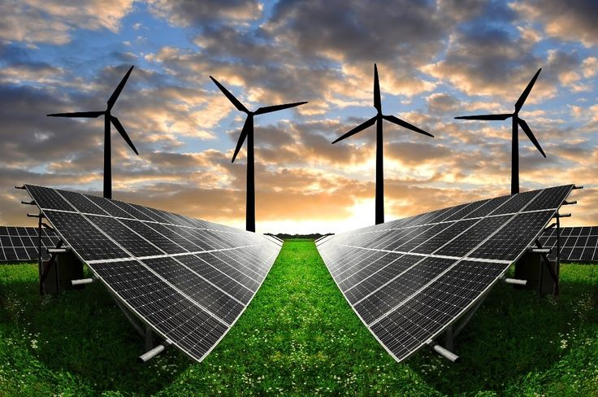

Acciones y métodos para la sustentabilidad
Gestión de recursos naturales
Método: Implementar estrategias de uso eficiente del agua, como sistemas de riego por goteo o captación de agua de lluvia.
Acción: Fomentar la conservación de ecosistemas clave, como bosques y humedales, para preservar la biodiversidad y el equilibrio natural.
Reducción de emisiones de carbono
Método: Transitar hacia el uso de energías renovables como la solar, eólica o geotérmica.
Acción: Promover el uso de transporte sostenible, como bicicletas, vehículos eléctricos o el transporte público.
Economía circular
Método: Diseñar productos y servicios que utilicen materiales reciclables o biodegradables.
Educación y sensibilización ambiental
Método: Realizar talleres y campañas educativas sobre el impacto del consumo irresponsable.
Acción: Incluir temas de sostenibilidad en currículos escolares y actividades comunitarias.
Agricultura sostenible
Método: Adoptar prácticas agrícolas como la rotación de cultivos, el uso de compost y la eliminación de pesticidas dañinos.
Acción: Fomentar mercados locales y orgánicos para apoyar a agricultores que usan métodos sostenibles.
Construcción sostenible
Método: Incorporar materiales ecoamigables y sistemas de eficiencia energética en las edificaciones.
Acción: Construir casas y oficinas que aprovechen al máximo la luz natural y minimicen el uso de electricidad.
Conservación de energía
Método: Implementar tecnologías como luces LED y electrodomésticos de bajo consumo.
Acción: Fomentar hábitos como apagar dispositivos cuando no se usan y optimizar el uso del aire acondicionado o calefacción.
Reducción del consumo
Método: Promover el uso de productos reutilizables, como bolsas de tela y botellas recargables.
Acción: Difundir prácticas de consumo responsable en eventos, escuelas y medios de comunicación.

Regulaciones y políticas ambientales
Método: Crear incentivos fiscales para empresas que reduzcan su huella ambiental.
Acción: Establecer leyes que prohíban el uso de plásticos de un solo uso y que regulen las actividades extractivas.
Participación comunitaria
Método: Crear redes locales para compartir recursos, como sistemas de compostaje comunitarios o huertos urbanos.
Acción: Involucrar a los ciudadanos en proyectos de reforestación, limpieza de áreas naturales y monitoreo ambiental.